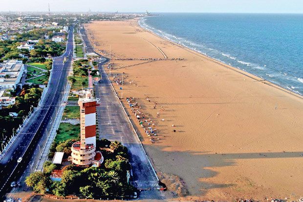
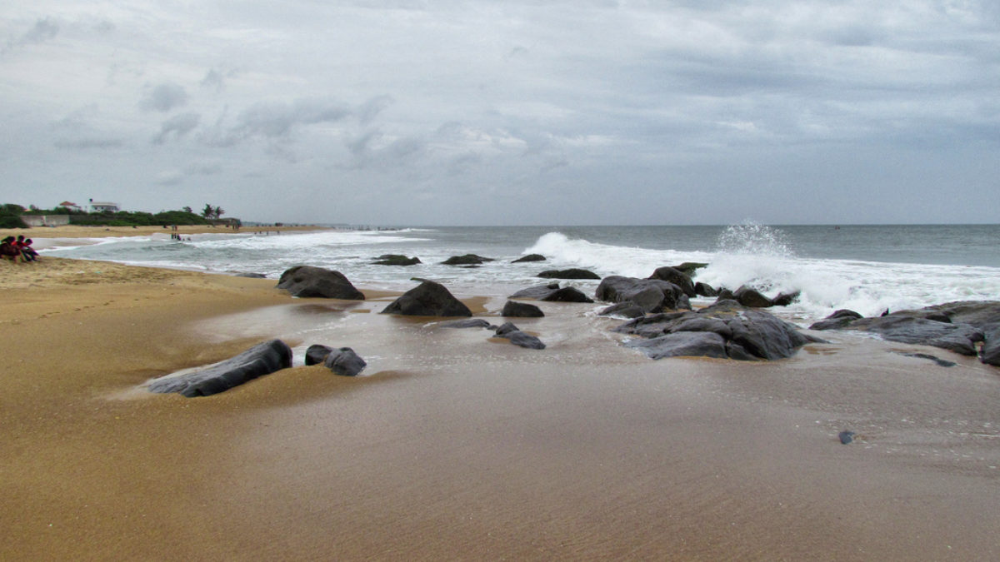
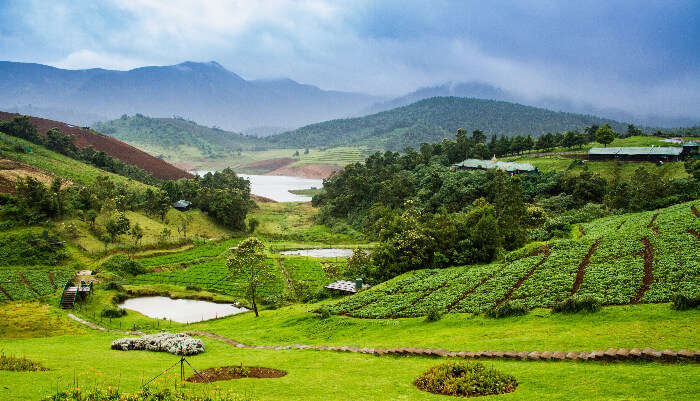

BRIHADEESWARAR TEMPLE
The ‘Brihadeeswarar Temple’ is a delightful abode of Lord Shiva and is located in the Thanjavur district of Tamil Nadu. It is one of the largest temples in India. This brilliant creation of the Chola dynasty in the 11th century AD stands tall as a testimony to the opulence and grandeur of the Chola rulers.
Today, the temple enjoys the status of a UNESCO World Heritage Site under the list of ‘Great Living Chola Temples’ and is visited by hundreds of thousands of devotees and tourists every year.
SRI RANGANATHASWAMY TEMPLE
Dedicated to Lord Vishnu, the ‘Ranganathaswamy Temple’ located on the Srirangam Island of the Tiruchirappalli city in Tamilnadu, is another masterpiece of Dravidian architecture. Spread across an area of over 150 acres, the temple has 49 sub-shrines and is dotted with 21 brilliantly carved Gopurams (tower gateways) with the main or the ‘RajaGopuram’ standing tall at 236 ft. making it the tallest Gopurams in Asia.The temple also has 7 prakaras or enclosures with the presiding deity of Lord Vishnu in the form of Lord Ranganathaswamy reclining on five-headed serpent, enshrined in the innermost prakara. The tower above the innermost prakara is in the shape of ‘Om’ and is completely plated in Gold.
BEACHES
MARINA BEACH
Marina Beach Tamil Nadu
Heartbeat of Chennai City, Marina Beach makes for an alluring backdrop and is considered as one of the largest Urban Beaches in the world. Stretched in the area of nearly 13 km, this beach in Chennai is one of prominent tourist attraction in the city. Reckoned to be an urban beach, this tourist hot spot in Chennai attracts a heavy gathering of 30,000 tourists a day. Being a busy tourist attraction in Chennai, Marina Beach presently serves as a perfect stopover for the locals as well as tourists to spend their weekends at the beach. Not just the present of this resplendent tourist place in Chennai is beautiful but the past as well. During the period of Indian Freedom Movement, Marina Beach served as an eminent place for the social gatherings and public meetings.
MAHABALIPURAM BEACH
Some 58 km south of the Chennai, there lies a spectacular beach in Tamilnadu shored by the Bay of Bengal, Mahabalipuram or locally referred as Mamallapuram. From the 8th century Shore Temple on the seashore to rock-cut sculptures and monuments like Monolithic Rathas and Caves, this bewitching tourist attraction in Tamilnadu is a perfect blend of historical significance and nature resplendence. This charming beach is one of the perfect places in India for sunbath (which is the must-do activity here), and thus, lures larger chunk tourists both domestic as well as overseas. Moreover, If you’re into windsurfing and swimming, don’t hesitate to hit the shores of the beach while playing with the moving tides. The charm of this beautiful place doesn’t end here, it also has wildlife experience to proffer to nature lovers or history buffs as there is crocodile bank and snake venom extracting center situated just a few km away from the beach.
KANYAKUMARI BEACH
The southernmost coast of the Indian peninsula, Kanyakumari beach is one of the pristine tourist attractions in South India. Moreover, located at the confluence of Arabian Sea, Indian Ocean, and the Bay of Bengal, this beaut beach is India’s land end, and thus, gives a resplendent feeling while visiting this place. The golden sand, azure water and serene ambiance altogether filled this alluring tourist attraction in Tamilnadu with the opulent exquisiteness. There is a prescription for visitors to enter the sea because of turbulent tides which obviously not hamper the wanderers to visit this place. Despite the prohibition, tourists visit this place to savour the surreal views sunset and sunrise for which the beach is famous for.
COVELONG BEACH
A picture-perfect tourist attraction in Tamilnadu located somewhere around 40 km south of Chennai is Covelong Beach. Brimming in culture and soaked in serenity, Covelong beach is the dream destination for all those who wander in the search of a tranquil vacation. Established by the Nawab of Carnatic as a port town, the bewitching Covelong Beach is one of the most revered tourist attractions on Coromandel Coast and is located on the route to Mahabalipuram. Separated from the mainland of India, this enchanting beach is amongst those places in Tamilnadu where you have the chance to encounter the thrill of windsurfing in Tamilnadu.
HILLS
KODAIKANAL
Comprised of densely wooded jungles, undulating hill slopes, meandering rivers, cascading waterfalls, and verdure valleys-Kodaikanal's scenic beauty never fails to mesmerise travellers. Often referred to as the 'Princess of Hills', Kodaikanal is one of the most popular tourist destinations in South India. Situated at an elevation of 7000 feet above sea-level, along the crest of the Palani Hills, Kodaikanal leaves travellers spoilt for choice while it comes to the places to visit. The major valleys-the Parappar and Gundar surround Kodaikanal from both sides..
OOTY
Comprising undulating hills, lush valleys and a number of beautiful lakes-with its scenic beauty Ooty always casts its charm on the discerning travellers. Often referred to as the 'Queen of Hills', the hill station is one of the most popular places to visit not only in South India but also in the rest of the country. The hill station is situated at an elevation of 2240 metres above sea level and is one of most popular tourist destinations in Tamil Nadu.
ANAIMALAI HILLS
The Anaimalais or Anamala, also known as the Elephant Mountains, are a range of mountains in the southern Western Ghats and span the border of western Tamil Nadu(Coimbatore district and Tiruppur district) and central Kerala(Palakkad district, Thrissur district, Ernakulam district, and Idukki district) in Southern India. The name anamala is derived from the Tamil word aanai, the Malayalam word aana, meaning elephant, or from tribal languages. Mala or Malai means 'hill', and thus 'Elephant hill'
FOOD
SAMBAR
It is a lentil-based stew which has been prepared with tomatoes and/or tamarind as its base for building flavours. Whether it is for breakfast or a lavish traditional Tamilian lunch spread, Sambar is a significant part of almost every meal in Tamil Nadu and in Tamilian homes everywhere. Vegetables such as carrots, yam, drumsticks and okra are added to the pot of Sambar to make it more delicious and nutritious.
UTTAPAM
Uttapam is a dish very similar to the dosa and is a speciality of Tamil Nadu food. It is made by grinding the Urad Dal and rice powder together. It is then allowed to ferment for a few hours and then slow fried over very minimal oil over a skillet. Uttapam is flat and crispy at the sides just like dosa but soft and doughy in the middle like an Idli. The uttapam is then given a little topping of tomatoes, onions, capsicum etc. It tastes delicious with either coconut chutney or Sambar, however, I would recommend the coconut chutney. You can also try it with the spicy tomato and chilli chutney which tastes quite heavenly.
LANGUAGE
TAMIL
Tamil (/ˈtæmɪl/; தமிழ் Tamiḻ [t̪amiɻ], About this soundpronunciation (help·info)) is a Dravidian language natively spoken by the Tamil people of South Asia. Tamil is an official language of the sovereign nations of Sri Lanka and Singapore,[8][9] the Indian state of Tamil Nadu, and the Union Territory of Puducherry. Tamil is spoken by significant minorities in the four other South Indian states of Kerala, Karnataka, Andhra Pradesh and Telangana and the Union Territory of the Andaman and Nicobar Islands. It is also spoken by the Tamil diaspora found in many countries, including Malaysia, Myanmar, South Africa, United Kingdom, United States, Canada, Australia and Mauritius. Tamil is also natively spoken by Sri Lankan Moors. One of 22 scheduled languages in the Constitution of India, Tamil was the first to be classified as a classical language of India.
LIFESTYLE AND CULTURE OF TAMIL NADU
Tamil Nadu is a state which has a deep-rooted culture and tradition as it has been ruled by many rulers since the medieval period, The Cholas, Pandyas & Pallavas. It is the place where Dravidian culture started and is still being followed by the people there. The whole land is rich with its significant culture, architecture, dance, rituals, etc. Tamil is the language mostly used by the people here. The Tamil language is mainly a mixture of two languages that is English and Sanskrit. Many words are taken from English, molded with Sanskrit, and used as the Tamil Language. It is even used in many other places like Sri Lanka, Mauritius, Malaysia, and Singapore. It is our first classical language and also one of the languages scheduled in our Constitution.Bharatnatyam is the classical dance of Tamil Nadu which is one the most beautiful form of dance in India along with that there are many more types of dance performed on different occasions and every dance has its own importance. Karakattam is an ancient folk dance that is performed in front of Goddess Mariamma.
BEST TIME TO VISIT TAMIL NADU
The best time to go to Tamil Nadu is between the end of November and mid-March. This huge state stretches from the sandy coast up to the Western Ghats and Kerala, so the broad range of landscapes offer a mix of cooler, rainy days in the Nilgiri Hills and often intense heat on the coast.
BUDGET REQUIRED
Approx~ 16,904 INR(per person, 1week)